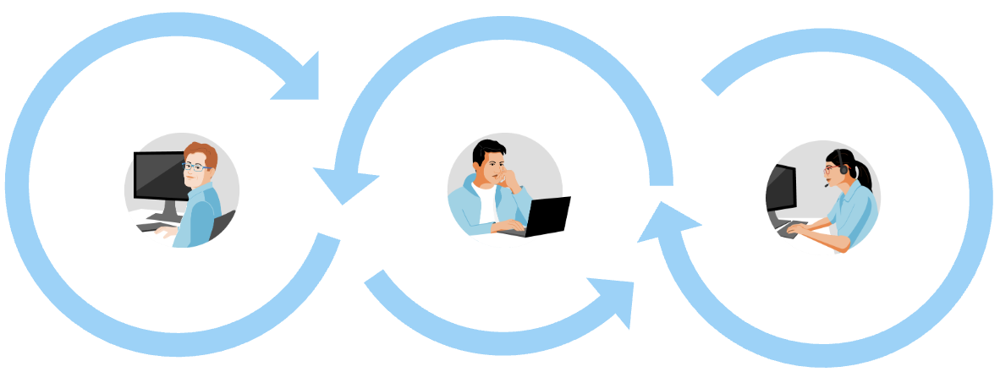

Meet the Teams Behind an Application Platform
In this lesson, you’ll meet the three primary personas that interact with an Application Platform and understand how each team contributes to modern software delivery.
| As you progress through this lesson, think about your own organization. Which team do you work with most closely, and what challenges do they face when building, deploying, or operating applications? |
Why Different Teams Matter
-
Modern software delivery is a collaborative effort.
-
Rather than being owned by a single team, building and operating applications requires close collaboration between Operations Engineers, Platform Engineers, and Application Developers. Although they share the same business goals, each team has different responsibilities, priorities, and measures of success.

Throughout this learning path, you’ll revisit these personas to understand how different Application Platform capabilities help solve their day-to-day challenges.
Meet Alex — Operations Engineer
-
Alex is responsible for the reliability, security, and day-to-day operation of the platform.
-
His work ensures that developers have a stable and secure environment for running applications.
-
Success is measured by:
-
Platform availability
-
Reliability
-
Security
-
Compliance
-
Operational stability
Common questions Alex asks (Click to expand)
-
How do I keep the platform secure?
-
How do I perform upgrades with minimal downtime?
-
How do I enforce organizational policies?
-
How can I monitor cluster health and reliability?
-
-
| Alex wants developers to move quickly—but never at the expense of security or reliability. |
Meet Penny — Platform Engineer

-
Penny builds and maintains the Internal Developer Platform used by application teams.
-
Rather than provisioning infrastructure for every request, she creates reusable templates, Golden Paths, and self-service capabilities that simplify software delivery while enforcing organizational standards.
-
Success is measured by:
-
Developer productivity
-
Platform adoption
-
Golden Paths
-
Standardization
-
Developer satisfaction
Common questions Penny asks (Click to expand)
-
How can developers onboard faster?
-
How do I reduce repetitive operational work?
-
How can I provide secure defaults?
-
How do I standardize software delivery across teams?
-
-
| Penny’s goal is to make the recommended path the easiest path for developers. |
Meet David — Application Developer
-
David develops application features that deliver business value.
-
He wants to spend his time writing code rather than managing infrastructure, configuring Kubernetes resources, or maintaining deployment pipelines.
-
Success is measured by:
-
Shipping features quickly
-
Fast onboarding
-
Reduced cognitive load
-
Development velocity
Common questions David asks (Click to expand)
-
How quickly can I deploy my application?
-
Do I need to understand Kubernetes?
-
Can I create new services without opening infrastructure tickets?
-
How can I spend more time writing code and less time managing platform configuration?
-
-
| David wants to focus on building applications—not managing infrastructure. |
Comparing the Personas
Although each team has different responsibilities, they all rely on the same Application Platform.
| Operations Engineer | Platform Engineer | Application Developer |
|---|---|---|
Reliability |
Developer Experience |
Feature Delivery |
Security |
Standardization |
Fast Onboarding |
Compliance |
Self-Service |
Productivity |
Platform Availability |
Golden Paths |
Rapid Delivery |
Why an Application Platform Matters
-
Without an integrated Application Platform, each team spends significant effort selecting, integrating, and maintaining independent tools for building, deploying, securing, and operating applications.
-
An Application Platform reduces this complexity by providing a consistent developer experience that benefits every persona:
-
Operations Engineers manage secure and reliable platforms.
-
Platform Engineers provide reusable services and organizational guardrails.
-
Application Developers consume self-service capabilities and focus on delivering business value.
-
Reflection
Think About Your Organization (Click to expand)
Consider how software is delivered in your organization.
-
Which persona best matches your current role?
-
Which team owns the developer platform?
-
Where do developers experience the most friction?
-
Which persona would benefit the most from an Application Platform?
Check Your Understanding
Quiz Time! (Click to expand)
Match each responsibility with the persona most likely responsible for it.
-
Creating reusable Golden Paths
-
Maintaining platform availability
-
Delivering new application features
-
Improving developer onboarding
-
Enforcing organizational security standards
Answers
-
Platform Engineer
-
Operations Engineer
-
Application Developer
-
Platform Engineer
-
Operations Engineer